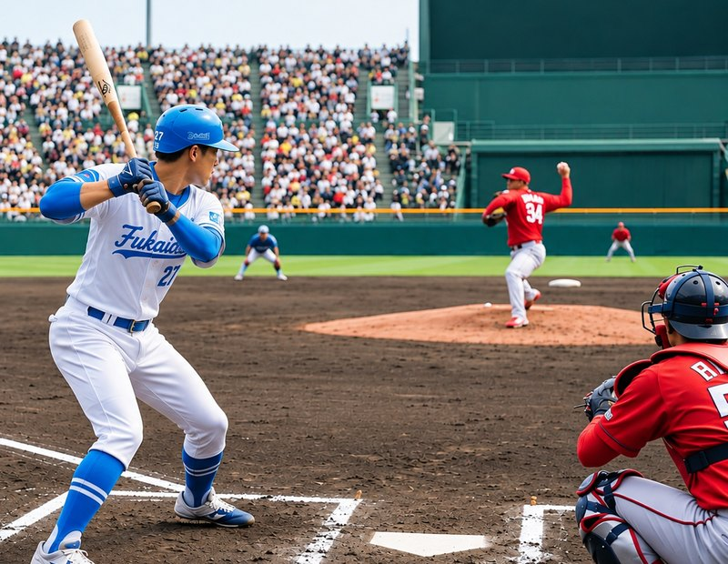

深谷第一高校 野球部
チームデータ分析
⋯
選手
打者
打者を追加（ログインなし）
選手名
打席
右打ち
左打ち
登録
やめる
試合
対戦
試合を追加
日付
相手校
登録
やめる
投手
交代したら追加
—
登板中
投手を追加・交代
投げ腕
右投げ
左投げ
投げ方
オーバー
スリークォーター
サイド
アンダー
ストレートの速さ
（主観）
速い
普通
遅い
メモ
（背番号など・任意）
登録して登板
やめる
打席を記録
記録を修正しています
やめる
—
① 打った球のコース
（25分割・青枠の内側がストライク）
—
高め
—

低め
② 判定
ストライク
ボール球
③ 球種
（曲がった方向・打者目線／中央＝ストレート／↑＝チェンジアップなど遅い球／カット・ツーシームは横に入れてください）
④ 結果
⑤ アウト / セーフ
アウト
セーフ（安打）
⑥ 補足
（任意・複数可）
この打席を記録
入力をクリア
この試合の打席
自チームの投手
監督・コーチのみ
名前
投げる手
右投げ
左投げ
投手を追加
試合と投手
試合
投手
回
試合を追加
日付
相手校
登録
やめる
—
相手の打順
試合ごとに1回
相手の打順を保存
右打ち・左打ちを入れておくと、投手ごとに「右打者に強い／左打者に弱い」が出せます。わからない打順は空のままで大丈夫です。
代打や守備交代で途中から変わったときは、その打席の入力画面にある「相手打者」で交代後の左右を選んでください。
その回より後の同じ打順にも引き継がれます
ので、毎回選び直す必要はありません。
打者を記録
1人ずつ
記録した打者を直しています
やめる
—
打順
打順を自分で選ぶ
相手打者
打席の途中で投手交代
初球を投げた投手
結果はいま選んでいる投手に付きます。初球ストライク率だけ、こちらの投手に付きます。
① 初球
ストライク
ボール
② 結果
この打者を記録
入力をクリア
この回のまとめ
投手ごと
—
タイブレークの回
球数の入れ方
（スコアブックに合わせて）
この回だけ
累計（この回まで）
この回の球数
失点
その他のアウト
この回を保存
この回の記録を消す
途中で交代した回は、投手を切り替えてそれぞれ保存してください。
累計で入れるときは、回の順に入れてください（前の回が入っていないと差し引きできません）。
「その他のアウト」は牽制死・盗塁死・走塁死など、打者の結果に出ないアウトの数です。無ければ空欄で大丈夫です。
延長のタイブレークは無死一・二塁から始まるので、その回は「タイブレークの回」を押してください。失点の平均から外して数えます（打者の記録や球数はそのまま使います）。
この回（打順の順）
タップで入力・修正
スコアブックと同じ並びです。その回に回ってこなかった打順は空のままで大丈夫です。
この試合のマス目
タップでその打席へ
埋まっているマスが記録済みです。抜けているところを探すのに使ってください。
この試合の流れ
打撃
投球
絞り込み
打者
期間
相手校
投げ腕
投げ方
球速（主観）
球種
判定
コース左右
絞り込みを解除
成績
打率
—
出塁率
—
長打率
—
OPS
—
打席
—
打数
—
安打
—
塁打
—
四球
—
死球
—
犠打・犠飛
—
三振
—
チーム内ランキング
上位10名
並び順
コース別打率
9分割＋ボールゾーン
—
高め
—
低め
各セルは「打率／安打-打数」。斜線は打数3未満で、まだ判断材料が足りないコースです。
コース左右別
高さ別
球種別
投手の利き腕から判定
同じ「横に曲がる球」でも、右投手なら一塁側へ、左投手なら三塁側へ曲がります。その違いを踏まえて球種を判定しています。
打者から見た動き
逃げる／食い込む
球種にかかわらず「体から逃げる球に弱い」といった傾向を見る表です。
投手タイプ別
打球の質
打率だけでなく打球の内容を見ます。強い打球が多いのに打率が低いコースは、運に恵まれていないだけかもしれません。
絞り込み
投手
期間
相手校
絞り込みを解除
—
成績
初球ストライク率
—
先頭を切った率
—
与四死球率
—
奪三振率
—
被打率
—
投球回
—
1回あたり球数
—
失点率
9回あたり
—
先頭打者で決まる
ここが一番効きます
その回の先頭打者を切れたかどうかで、失点がどれだけ変わるかを見ます。差が大きいほど「先頭を抑える」練習の価値が高いということです。途中から登板した回は、先頭を迎えていないので数えません。
回ごとの様子
スタミナ
試合の何回目かで並べた表です。途中で守備に回って再登板する投手は、下の「球数ごとの様子」のほうが実態に合います。
右打者・左打者別
ブルペンの練習相手を決める
球数ごとの様子
本当のスタミナ
その回に入るまでに何球投げていたかで分けた表です。先発でも救援でも、守備に回ってからの再登板でも、同じものさしで「何球あたりから落ちるか」が見えます。球数を記録した回だけが対象です。
アウトの取り方
ゴロが多い投手か、フライが多い投手かで、守備の位置取りや併殺の期待値が変わります。
投手別ランキング
上位10名
並び順
共有のしかた
書き出し
CSVで書き出す
JSONで書き出す
CSVをコピー
JSONを読み込む
アカウント管理
ログインできる人
アカウントを追加
① 名前
② 権限
選手
マネージャー
監督・コーチ
閲覧のみ
③ 打席
右打ち
左打ち
選手として打者一覧にも登録されます。打席の記録を始めるのに、ほかの登録は要りません。
この人の打撃データも取る
④ ログインID
（半角英数）
⑤ パスワード
（8文字以上）
登録
やめる
打者の一覧
打撃データを取る人
お試し
動きを確認したいときはサンプルを入れてみてください。打者4人・投手4人・8試合ぶんが入ります。それぞれ特徴を付けてあるので、分析の見方を試すのに使えます。既存のデータは消えません。「サンプルを消す」でサンプルだけまとめて消せます。
サンプルデータを追加
サンプルを消す
全消去
保存した全データを消します。戻せません。
すべて消す
✎
打撃
◍
投球
▦
分析
⇅
データ
深谷第一高校 野球部
チームデータ分析
ID
パスワード
ログイン
IDとパスワードは監督・コーチから受け取ってください。
はじめての設定です。
監督・コーチのアカウント
を作ります。
部員やほかのコーチは、このあとアプリの中から追加できます。
お名前
ログインID
（半角英数）
パスワード
（8文字以上）
パスワード（確認）
このアカウントで始める
—
表示を切り替える
パスワードを変更
いまのパスワード
新しいパスワード
（8文字以上）
変更する
ログアウト
閉じる
はい
やめる